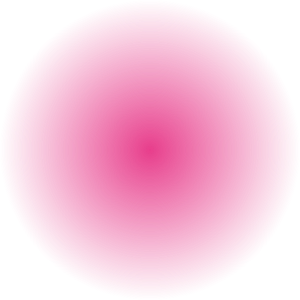

–
alpha @ cursor
These images fade a solid colour to fully transparent. Drag the opacity threshold slider to sweep the clickable boundary across the fade: pixels more opaque than the threshold catch clicks, while more-transparent pixels let clicks fall through to the button behind.
← Back to the main demoOpaque on the left, transparent on the right. The red line marks
where alpha = threshold; everything in the
striped band is click-through.
Opaque in the centre, transparent at the edges. The dashed ring is the clickable circle — raise the threshold and it shrinks toward the solid core.

alpha > threshold →
pointer-events: auto (clickable); otherwise
pointer-events: none (click-through).